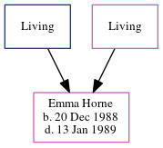

Emma Jayne Horne 1988 - 1989
[ Home ] | [ Calendar ] | [ Surnames Index ] | [ Errors ] | [ Family History ]The eldest of 3 children of David Horne and Michaela Grant, Emma Horne, the niece of Nigel Horne, was born in Thanet, Kent, England on 20 Dec 19881,2,3.
She died in Thanet on 13 Jan 19893.
Parents
- David James
- Michaela Jayne
Citations
- England & Wales deaths 1837-2007 - Findmypast
- England & Wales, Birth Index: 1916-2005 Online publication - Provo, UT, USA: The Generations Network, Inc., 2008.Original data - General Register Office. England and Wales Civil Registration Indexes. London, England: General Register Office. © Crown copyright. Published by permission of the Cont
- England & Wales, Death Index: 1984-2005 Online publication - Provo, UT, USA: The Generations Network, Inc., 2007.Original data - General Register Office. England and Wales Civil Registration Indexes. London, England: General Register Office. © Crown copyright. Published by permission of the Cont
Media
England & Wales births 1837-2006 - BMD/B/1989/1/117158930
England & Wales deaths 1837-2007 - BMD/D/1989/1/77341421
Family Tree
Map
Generated by ged2site. Last updated on Jul 3, 2024